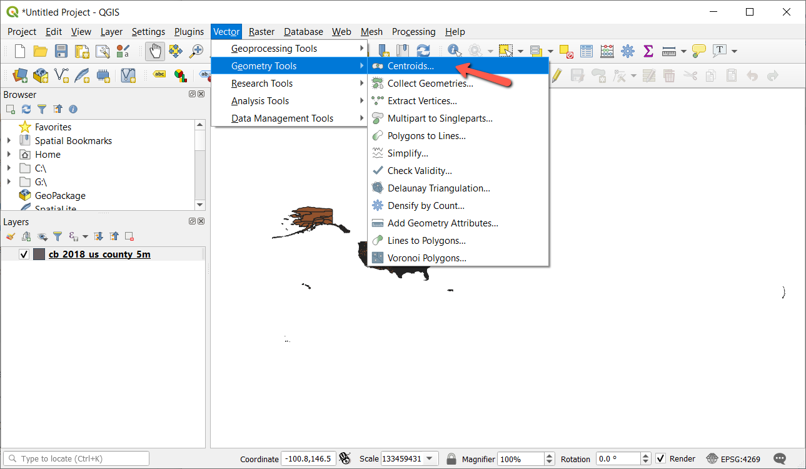
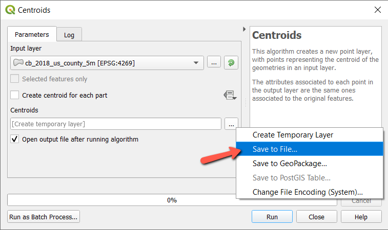
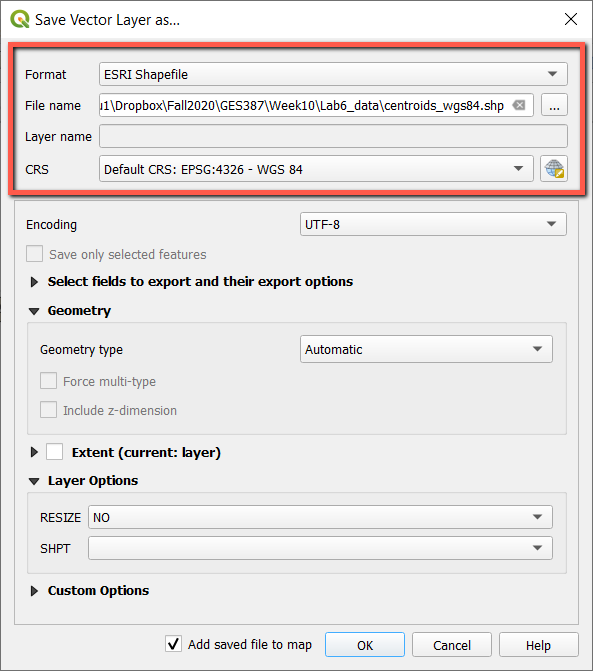
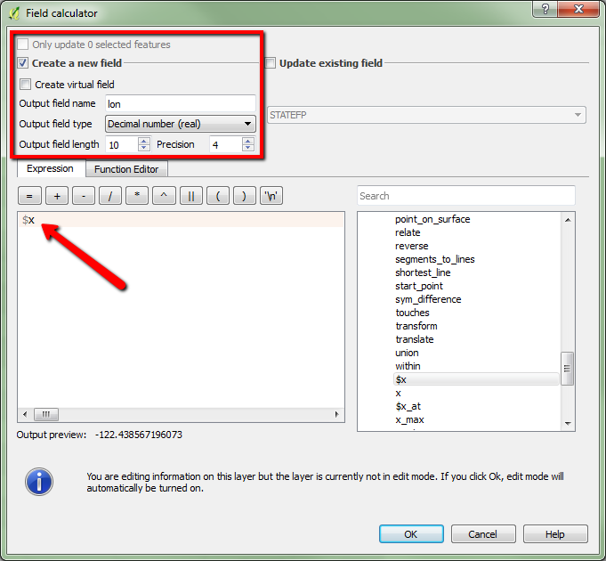
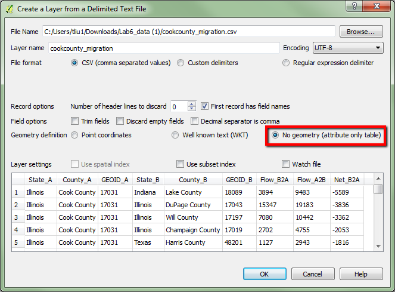
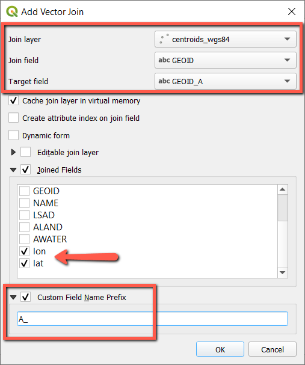
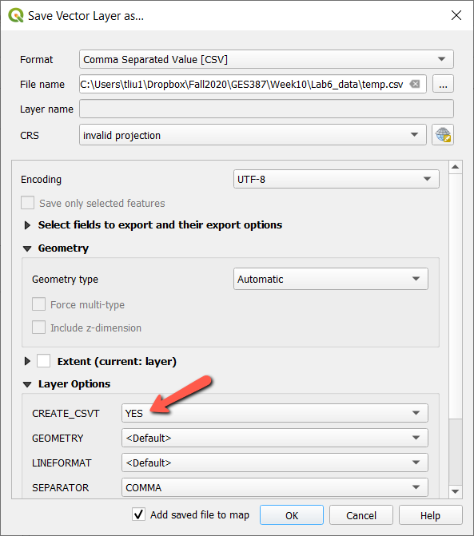
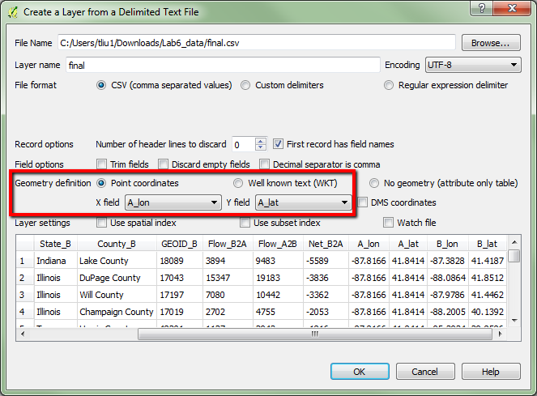
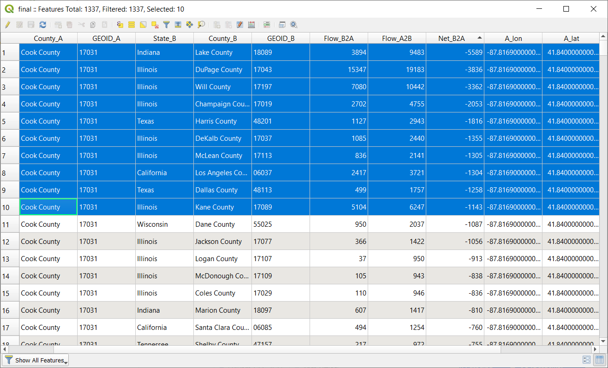

INCOMPLETE Lab 6. Flow Map
Due: 11:59 pm, Wednesday, 11/7
Overview
In this lab, we will create a flow map to visualize county-to-county migration data in the U.S.
Specically, we use a Leaflet plugin called Leaflet.Canvas-Flowmap-Layer, which maps the flow of objects from an origin point to a destination point by using a Bezier curve.
Please read the instructions carefully (including the explanations of each step) and complete the assignment in the Deliverables section at the bottom.
Download Migration Data
We will map county-to-county migration using data from the U.S. Census Bureau.
- Download the lab data here. Extract the data to your desired directory. We will use the same dataset for creating the final deliverables.
- The folder contains a CSV file, with an associated CSVT file which defines data types when the CSV is added to QGIS. You don't need to do anything with the file here, just make sure they are stored in the same folder.
- The table is a subset from the American Community Survey's County-to-County Migration Flows: 2011-2015. Some preprocessing has been done (if you are interested, you may download the orignal data file (In-, Out-, and Net Migration) to compare).
- Open the CSV file in Excel and familiarize yourself with the attributes.
- The table contains In-, Out-, Net, and Gross Migration data for Cook County (
County_A), Illinois (State_A) between 2011 and 2015. - The origin/destination county is shown as
County_B,State_B. - Each county has a unique 5-digit identifier which is provided in the
GEOID_AandGEOID_Bfields. Read here to learn more about GEOIDs. Flow_B2Agives the estimate of people moving from county B to county A (Inflow to Cook County).Flow_A2Bis the estimate of people moving out from county A to county B (Outflow from Cook County).Net_B2Ais the net migration from county B to county A (Net inflow to Cook County).
- The table contains In-, Out-, Net, and Gross Migration data for Cook County (
Format Data
The flowmap plugin requires the input data to be a GeoJSON point layer in a specific format. This layer expects that both origin and destination coordinates (lat and lon) and other attributes (e.g., id of origin and destination, flow data to be mapped, etc) are available in the layer's attribute table.
We do have the CSV file with origin and destination ids and flow data. However, the CSV file does not contain any coordinates data. The only locational information we have is the name of each county and state.
How do we format the data to be used with the plugin? - I will show you how I did it in this step.
If you already have some GIS background, you are welcome to try this step on your own and let us know if you figure out a different/better approach. Below is an example of the final point layer's attribute table.
- Since we need the spatial information of the counties, the first step I did was to get a counties shapefile from the Census (get the shapefile here).
- Open QGIS and add the shapefile, which is the boundary file of U.S. Counties.
- This is a polygon layer, not a point layer. What we could do is to generate the centroids of polygons to represent each county as a point. In QGIS, go to Vector > Geometry Tools > Polygon Centroids, and save the output point layer to your USB drive or your desired directory (see images below). Click OK to run.

 - The centroids are generated and added to QGIS automatically. REMOVE the polygon layer to avoid confusion.
- The next step is IMPORTANT: we will save the centroids with WGS 84 as the coordinate system before calculating the points' latitude and longitude. Otherwise, the coordinates may be incorrects and the points won't be displayed properly on the web map.
- Right-click the centroid layer in the Layers Panel and select Save As, save the layer as a ESRI Shapefile with CRS of WGS 84.
Note we are NOT saving the layer as geojson at this point since there are still a few more steps before creating the final geojson data.
 - Once we have the county centroids in WGS 84, we could calculate the latitude and longitude for each point. Remove the old centroid layer.
- Open the layer's attribute table, click the Field Calculator button
 .
. - Let's first calculate the longitude of the points. Create a NEW Decimal Number field with Precision 4 (number of decimal places). Select $x under Geometry as the Expression, which will return the x coordinate of the points in the layer's coorinate system (i.e., longitude as we are using WGS 84 as the coordinate system here). Click OK to calculate the new field.
 - Your Turn: calculate the latitude of the points (another new field), basically the y coordinates of the points.
- Click the Toggle Editing Mode button
 and SAVE the changes.
and SAVE the changes.
Now we have the spatial coordinates for the county centroids, how do we combine this with the migration data? - We may use a GIS technique called Table Join.
Compare the CSV file and the county centroids, you will find GEOIDs (different header names though) from both. GEOIDs are unique identifiers of the counties which could be used as the "key" to link the two files.
Table Join takes one table (or attribute table of a layer) as a target and join another table to it. The question is: which file do we consider to be the target?
- In QGIS, click the Add Delimited Text Layer button
 to add the CSV table. Since the table doesn't contain any geometry information, we would select no geometry.
to add the CSV table. Since the table doesn't contain any geometry information, we would select no geometry.
 - Since we need migration origin/destination information for mapping (as opposed to all counties), we should use the CSV file as the Table Join target, and join both county A and county B coordinates from the points layer to the CSV (so that we can map them as either origins or destinations). I will only show you how to join county A coordinates and you will apply the technique to join county B coordinates.
- In QGIS, right-click the CSV file and select Properties > Joins, click the Add button at the bottom.
Set up the Join and Target field properly (Note GEOIDs of the counties are the keys for the table join to work, the field names in each table could be different as long as the values are the same). Make sure to select the newly calculated lat and lon as fields to be joined. I also added A_ as the field name prefix to remind myself that these are county A coordinates. - Click OK and OK again to apply the changes. Return to the CSV table and verify if the table join was successful (you should see the A_lon and A_lat added to the table, the values are the same for each row as they are all Cook County - County_A/GEOID_A).
- If you try to add another table join right away, you will find the point layer is not available to be joined for a second time. To address this, we could save the joined table to a new file and then come back to add another join.
Right-click the table and select Save As to save the table as a CSV file, make sure to select YES for to CREATE_CSVT under Layer Options (see image below).
Again, csvt file defines field data types, e.g., string, integer, of a csv table in QGIS, which is critical for mapping/analysis purposes. - The new table should be added to QGIS automatically. REMOVE the old table to avoid confusion.
- Your Turn: Perform another table join to the new table to join the county B coordinates to it. VERIFY the results before continue. If you see NULL values, there might be something wrong.
- If you have done everything correctly, the table contains all the attributes we need, including origin/destination coordinates, and should look like:
- Also note that Table Join results are TEMPORARY, which means the new fields will get lost if you don't save the results to a new file.
- So, let's save it! Right-click and Save As a CSV, select YES to create CSVT file.
- Recall that we need a point layer with these attributes for the flow map. So we are not there yet, but very close.
- Use the Add Delimited Text Layer button to add the final table, choose X field (A_lon) and Y field (A_lat) to define the points this time as we have the coordinates now.
 - Select WGS 84 as the CRS in the CRS Selector window.
- Once the layer is added, remove other layers and you will see a single location (actually many points at the same location) which is the location of Cook County, IL (County_A) as we chose to display the layer using county A's coordinates.
You may choose county B's coordinates when displaying the points, which doesn't matter for using the flow map functions (as long as we have the same number of points). - We are ALMOST there! The last step before saving a geojson is to select a subset of data/flows you are intended to map so that the map doesn't look too busy. You may sort the data in the attribute table and select the rows/flows you would like to focus on.
- Please spend some time here and make sure you truely understand the data, which can be confusing with the two way flows and both positive and negative numbers.
- For example, I will map the top 10 net migration from Cook County (origin) so I sort the
NetB2Acolumn ASCENDINGLY and select the the first 10 rows by highlighting them in the attribute table.
 - Save the layer (select to Save only selected features) as a GeoJson file (EPSG:4326 - WGS 84 as the projection).
- Create a new file folder (e.g., lab6) for this lab.
- Next, use Atom to open the GeoJSON file, add the variable definition line at the beginning as we have been doing. Save the changed GeoJSON as
cook.jsto your lab6 folder.
A Simple Flow Map
We will begin with a simple flow map using the Leaflet.Canvas-Flowmap-Layer plugin. Using Leaflet plugin is basically adding more library files in your HTML document so that you could use their functions for doing specific things.
- First, open your code editor and set up the basemap showing the U.S. in fullscreen mode, and save the document as
map6.html. - The flow map requires additional libraries: Tween.js and CanvasFlowmapLayer.js that you will need to reference in your HTML document. There is a hosted version of Tween.js but you will need to download and save the CanvasFlowmapLayer.js here and reference it using RELATIVE URL.
<!-- Load animation tweening library requirement for CanvasFlowMapLayer --> <script src="https://cdnjs.cloudflare.com/ajax/libs/tween.js/16.6.0/Tween.min.js"></script> <!-- Load CanvasFlowMapLayer; change the path (relative URL) if necessary --> <script src="CanvasFlowmapLayer.js"></script> - Reference the data file in the
headsection as usual:<script type="text/javascript" src="cook.js"></script> - The flows are added through the
L.canvasFlowmapLayerfunction. Add the following lines BELOW theL.tileLayerpart. Read the comments for more explanations and let me know if you have any questions.L.canvasFlowmapLayer(data, { //data is the variable name I used for defining the cook.js data originAndDestinationFieldIds: { originUniqueIdField: 'GEOID_A', //origin ID, use GEOID_B if you want to reverse the flow originGeometry: { //origin coordinates - Cook County as outflow is being mapped in the example x: 'A_lon', y: 'A_lat' }, destinationUniqueIdField: 'GEOID_B', //destination ID destinationGeometry: { //destination coordinates x: 'B_lon', y: 'B_lat' } }, // Some options to customize the flow map, check out the link below for more // https://github.com/jwasilgeo/Leaflet.Canvas-Flowmap-Layer#options-and-property-summary pathDisplayMode: 'all', animationStarted: true, animationEasingFamily: 'Cubic', // Compare the options: // https://jwasilgeo.github.io/Leaflet.Canvas-Flowmap-Layer/docs/comparison/ animationEasingType: 'In', animationDuration: 2000 // in millisecond, the larger the number the slower }).addTo(map); - The map shows the flows you have selected and saved (sample code): Note the flow direction is correctly showing outflow from Cook County to other counties. defined by the origin/destination coordinates in the function.
By default, the origin location is displayed in larger yellow circle marker, while destinations are in smallr solid blue circle marker. If you are interested in customizing the markers for the flowmap, check out this link for an example.
Customize Flowlines
All the flowlines are displayed in the same style by default. We could further customize the lines by using thicker lines for high volumn flows, changing colors, etc.
- Place the following lines INSIDE the
L.canvasFlowmapLayerfunction, under the Options (indicated in comments) part:canvasBezierStyle: { //This example demonstrates the use of graduated symbols (class breaks) for the flowlines //Other options: https://developers.arcgis.com/documentation/common-data-types/renderer-objects.htm type: 'classBreaks', field: 'Net_B2A', // This is the field I intended to use for symbolizing the lines // Define the classes and symbols below classBreakInfos: [{ classMinValue: -5589, // break values of the class classMaxValue: -4000, symbol: { // Define the symbology for this class // See an example from the documentation:https://github.com/jwasilgeo/Leaflet.Canvas-Flowmap-Layer/blob/master/docs/class-breaks-symbology/index.html#L94-L137 strokeStyle: '#AD0755', // flow line color lineWidth: 10, // flow line width lineCap: 'round', // shape of the stroke end } }, { // another class classMinValue: -3999, classMaxValue: -3000, symbol: { strokeStyle: '#B21D63', lineWidth: 6, lineCap: 'round', } }, { // one more class classMinValue: -2999, classMaxValue: -2000, symbol: { strokeStyle: '#CA2070', lineWidth: 3.5, lineCap: 'round', } }, { // more classes if needed classMinValue: -1999, classMaxValue: 0, symbol: { strokeStyle: '#F965AA', lineWidth: 2, lineCap: 'round', } }], }, - This example demonstrates the use of graduated symbols (class breaks) for the flow lines. If you are looking for more options to customirze the flow map, the two links below might be helpful:
Render flowlines by simple style or catagories (unique values)
An example of more options on using class breaks - The customized map looks like (sample code) - zoom in to see the line width variations:
Add Map Title as a Control Pane
A little extra, we will try another way of adding titles to the map - with a Leaflet control, as opposed to using the <h> tag. We actually have used this function before for adding the legend. Adding a fixed map title would be easier.
- Place the following lines in the
scriptsection to add the control for the title:var title = L.control({position: 'topright'}); // position of the title title.onAdd = function (map) { this._div = L.DomUtil.create('div', 'title'); // create a div with a class "title" this._div.innerHTML = "<h3>TOP 10 Net Migration from Cook County, Illinois</h3>"; // Title text, may use html to customize return this._div; }; title.addTo(map); - We could also add some styles to the title control to make it look nice. Place the following lines in the
styletag (theheadsection):.title { padding: 6px 8px; font: 14px/16px Arial, Helvetica, sans-serif; background: white; background: rgba(255,255,255,0.8); box-shadow: 0 0 15px rgba(0,0,0,0.2); border-radius: 5px; } - If you would like to try some fun fonts, here is a list of Google fonts you could explore.
- I tried the Acme font and my final map looks like (sample code):
Deliverables
For the deliverables, we use the same migration data (flows between Cook and other U.S. counties). You will create TWO maps:
- A flow map to show the TOP 10 gross INFLOW (NOT the net migration) to Cook County (be careful when you define the origins and destinations in the function). Customize the flow lines (width and color) with the inflow data properly.
- Ask yourself a question based on the data, then create a flow map to answer your question. Add a title (on a control pane) to clarify what you are mapping here.
- Your final maps will be graded based on its overall design and accuracy, e.g., proper use of attributes, selection of data, direction of flows, data classification and symbolization, etc.
- Host your two maps separately via GitHub (Make sure to rename the html file as
index.htmland upload any associated data files and library file to the repository!!!) and submit the two urls through D2L. - EXTRA CREDITS (8 pts): Download the original county-to-county migration data from the Census (the In-, Out-, Net, and Gross Migration file). Clean up and format the data to create an animated flow map to show the TOP 10 county level NET migration (may be negative values, be careful about the flow direction) in the entire U.S. (2011-2015).